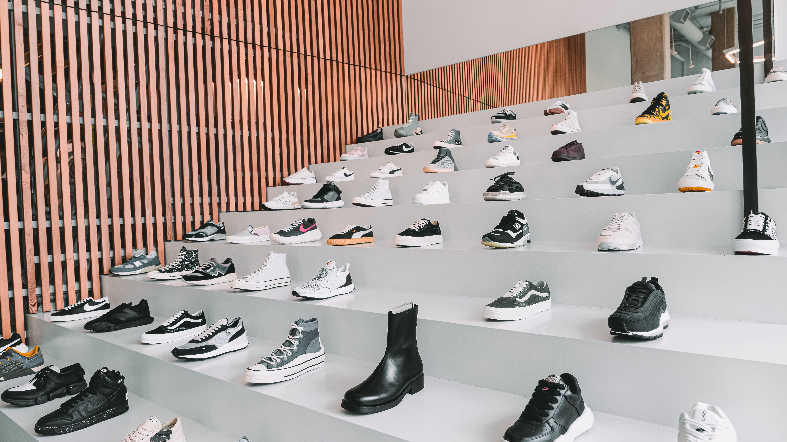

Melhores marcas
A Kallan apresenta uma seleção de marcas de calçados e acessórios em seu catálogo.

Seleção de marcas
Os nomes e categorias de marcas deverão ser conferidos no catálogo atual e, para o trabalho acadêmico, priorizar as informações confirmadas com o representante da organização.
Por que apresentar as marcas?
Uma página dedicada permite organizar a navegação por marca e facilita ao cliente encontrar produtos alinhados às suas preferências.